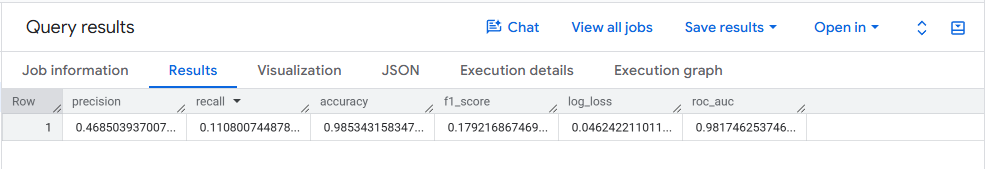

1. The Everyday Story: Window Shoppers vs. Actual Buyers
Imagine you manage an online store. Out of every 1,000 people who visit your website:
985 people just browse and leave without buying anything (window shoppers).
Only 15 people actually buy something (real buyers).
You trained a BigQuery ML model (sample_model) to look at four clues — operating system, mobile vs. desktop, country, and number of pages viewed — and guess: "Will this visitor buy something today?"
Then you tested the model on a brand-new month of visitors (July 2017) using ML.EVALUATE, and BigQuery gave you this one-row report card:

Figure 1: Your ML.EVALUATE query output for bqml_tutorial.sample_model on July 2017 website sessions.
2. All Six Metrics at a Glance (One-Sentence Plain English)
Almost all of these numbers live on a scale from 0.0 (worst) to 1.0 (best) — think of 0.468 as 46.8% and 0.985 as 98.5%. The only exception is log_loss, where 0.0 is best (like golf scores or error penalties: lower is better).
Column Name
Your Score
As a Percentage
Plain-English Meaning (No Math Jargon)
Ideal Score
precision
0.4685
46.9%
"When the model points at someone and says 'Buyer!', how often is it right?" (Almost half the time.)
1.0 (100%)
recall
0.1108
11.1%
"Out of all the real buyers who visited the store, how many did the model manage to spot?" (About 1 out of every 9 buyers.)
1.0 (100%)
accuracy
0.9853
98.5%
"Out of everyone (both shoppers and non-shoppers), how often was the model's yes/no guess right?"
1.0 (100%)
f1_score
0.1792
17.9%
"What is the combined balance between Precision and Recall?" (Low if either Precision or Recall is low.)
1.0 (100%)
log_loss
0.0462
Penalty score
"How far off were the model's confidence percentages, with a big penalty for being confidently wrong?"
0.0 (Lower is better)
roc_auc
0.9817
98.2%
"If you pick one real buyer and one non-buyer at random, how often does the model give the real buyer a higher score?"
1.0 (100%)
3. Metric-by-Metric Breakdown with Everyday Analogies
precision = 0.4685 (46.9%)
1. Precision — "Quality of Alarms"
Analogy: Imagine a VIP store greeter who taps customers on the shoulder if they look ready to buy. If the greeter taps 100 people, and 47 of them actually buy something (while 53 were false alarms), the greeter's precision is 47%.
When you care most about Precision: When taking action is expensive — for example, mailing a $20 printed gift voucher or having a live salesperson call the customer. You don't want to waste money on false alarms.
recall = 0.1108 (11.1%)
2. Recall — "How Many Real Buyers Did We Catch?"
Analogy: Think of casting a fishing net. Suppose there were 90 real buyers in the store today, and your model only flagged 10 of them (and missed the other 80). Your recall is 10 / 90 = 11.1% (1 in 9).
When you care most about Recall: When missing a positive case is costly — for example, catching credit-card fraud, medical screening, or sending a cheap automated 5%-off pop-up coupon so you don't let potential buyers slip away.
accuracy = 0.9853 (98.5%)
3. Accuracy — "Overall Right Answers (And Why It Can Trick You!)"
Analogy: In a desert city where it rains only 5 days a year (1.5% of days), a lazy weather forecaster who says "No rain today!" every single morning is 98.5% accurate — without ever predicting a single rainy day!
What it means here: Because 98.5% of website visitors don't buy anything, getting 98.5% accuracy looks impressive at first glance, but by itself it does not prove the model is good at finding buyers.
f1_score = 0.1792 (17.9%)
4. F1 Score — "The Tough Judge of Balance"
Analogy: Suppose a student scores 47% on Reading (Precision) and 11% on Math (Recall). Instead of taking a forgiving simple average (29%), the F1 Score uses a strict balance (harmonic mean) that pulls the grade down toward whichever score is weaker.
What it means here: Because Recall is low (0.111), the F1 Score stays low (0.179). To get a high F1 Score, a model must be good at both Precision and Recall at the same time.
log_loss = 0.0462 (Low = Good)
5. Log Loss — "The Confidence Penalty"
Analogy: Accuracy only checks whether your final Yes/No guess was right. Log Loss checks how confident you were. Saying "99% sure they will buy" when they don't buy gets a huge penalty; saying "2% chance they will buy" when they don't buy gets almost zero penalty.
What it means here: A score of 0.0462 is very close to 0.0, meaning the model's probability estimates are realistic and well-calibrated.
roc_auc = 0.9817 (98.2%)
6. ROC AUC — "The Ranking Superpower"
Analogy: Forget the Yes/No cutoff for a moment. Suppose you line up all visitors from highest predicted score to lowest. If you pick one real buyer and one non-buyer at random, ROC AUC asks: "What are the odds the real buyer is ranked higher?"
Score scale:0.50 = flipping a coin (useless); 1.00 = perfect ranking. Your model's 0.982 (98.2%) is excellent — it ranks real buyers near the top almost every time!
4. The Big Question: How Can roc_auc Be 98.2% While recall Is Only 11.1%?
This is the most important practical lesson in Google Lab 4:
Behind the scenes, the model outputs a probability between 0% and 100% for every visitor (for example, "Visitor A has an 18% chance of buying; Visitor B has a 0.02% chance of buying").
By default, BigQuery ML only labels a visitor as predicted_label = 1 (Buyer) if their probability is 50% or higher (0.50 cutoff).
Because online purchases are rare (~1.5% of visits), a visitor with a 20% or 30% purchase probability is already 15 to 20 times more likely to buy than an average visitor — yet the strict 50% default cutoff labels them as 0 ("Non-buyer")!
In Plain English:
Your model is actually great at ranking visitors (roc_auc = 98.2%), but the default 50% alarm bell is set too strict, so it only rings for the most obvious 11.1% of buyers (recall = 11.1%).
5. What Should a Business Person Do With This Model?
Instead of throwing the model away because recall is 11.1%, you simply adjust the cutoff threshold to match your business goal:
Business Scenario
Cutoff Threshold to Choose
What Happens to Precision & Recall
Scenario A: High-Cost Action (A human sales rep phones the customer)
Keep a high threshold (e.g., 50%+ confidence)
Higher Precision (~47%+), Lower Recall (~11%) — Sales reps only call the "surest bets" and don't waste time.
Scenario B: Low-Cost Action (Show an automatic "Free Shipping Today" banner on the website)
Lower the threshold (e.g., 10% or 15% confidence) in ML.EVALUATE(..., STRUCT(0.15 AS threshold))
Much Higher Recall (catches most buyers!), Lower Precision — A few non-buyers see the banner too, which costs almost nothing.
You can test a lower threshold (such as 15% = 0.15) directly in BigQuery with one small tweak to your ML.EVALUATE query:
SELECT *
FROM ML.EVALUATE(
MODEL `bqml_tutorial.sample_model`,
(
SELECT
IF(totals.transactions IS NULL, 0, 1) AS label,
IFNULL(device.operatingSystem, "") AS os,
device.isMobile AS is_mobile,
IFNULL(geoNetwork.country, "") AS country,
IFNULL(totals.pageviews, 0) AS pageviews
FROM `bigquery-public-data.google_analytics_sample.ga_sessions_*`
WHERE _TABLE_SUFFIX BETWEEN '20170701' AND '20170801'
),
STRUCT(0.15 AS threshold)
);